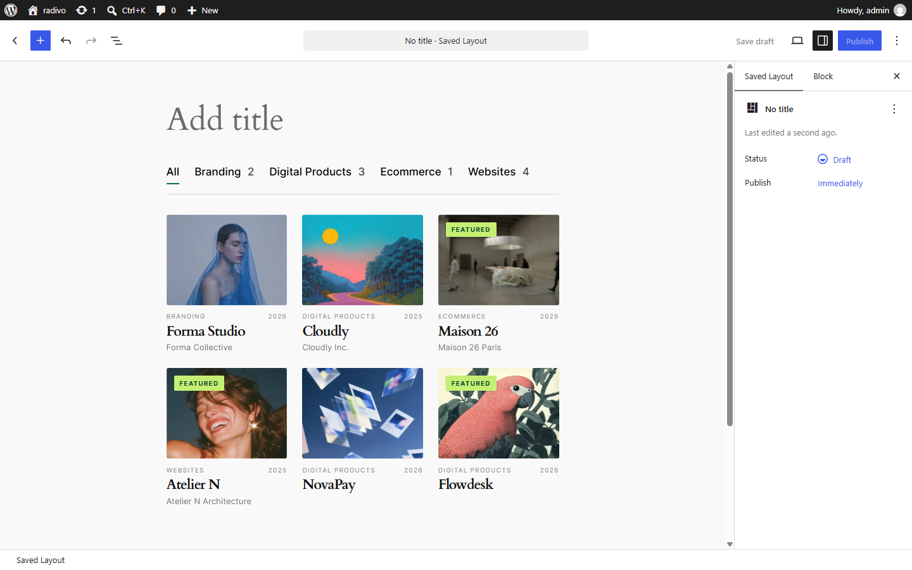

Shortcodes

Saved Layout
[vista_layout id="123"]
[vista_portfolio_layout id="123"]Both aliases render the same Saved Layout.
Inline collection
[vista_collection layout="grid" card_skin="standard" columns="3" per_page="6"]
[vista_portfolio layout="grid" columns="3"]| Attribute | Aliases | Default | Notes |
|---|---|---|---|
layout | grid | grid, list, masonry, slider | |
columns | col | 3 | |
gap | 24 | Pixel gap | |
per_page | number | 6 | |
orderby | from Settings | date, title, modified | |
order | from Settings | asc / desc | |
featured | 0 | 1 = featured only | |
pagination | 1 | ||
show_nav | 1 | Slider arrows | |
card_skin | skin | standard | |
autoplay | 0 | Slider | |
autoplay_speed | 4000 | Milliseconds | |
infinite | 0 | Slider loop |